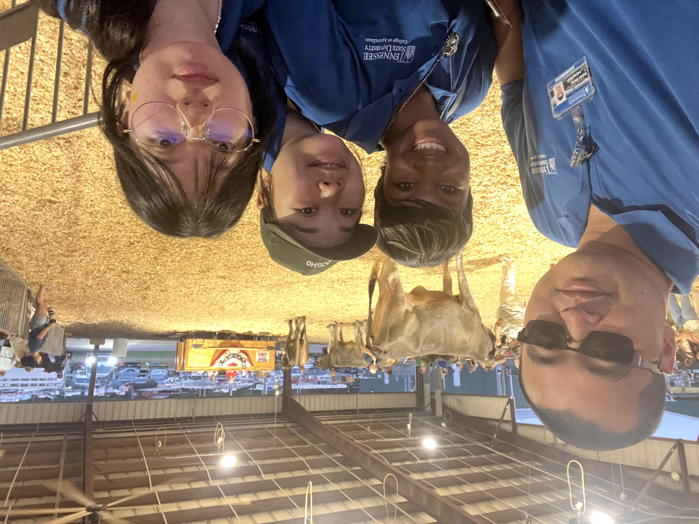
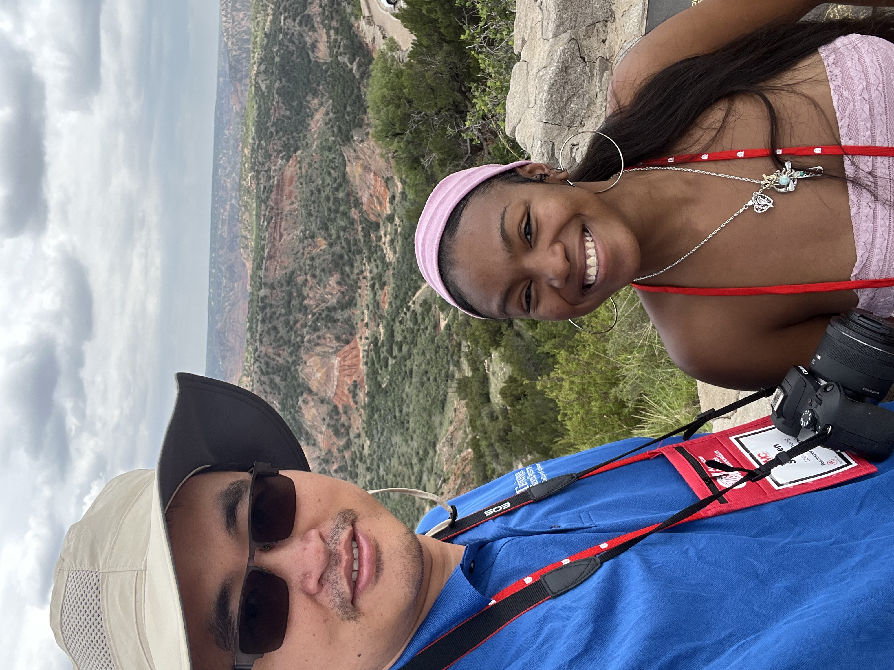
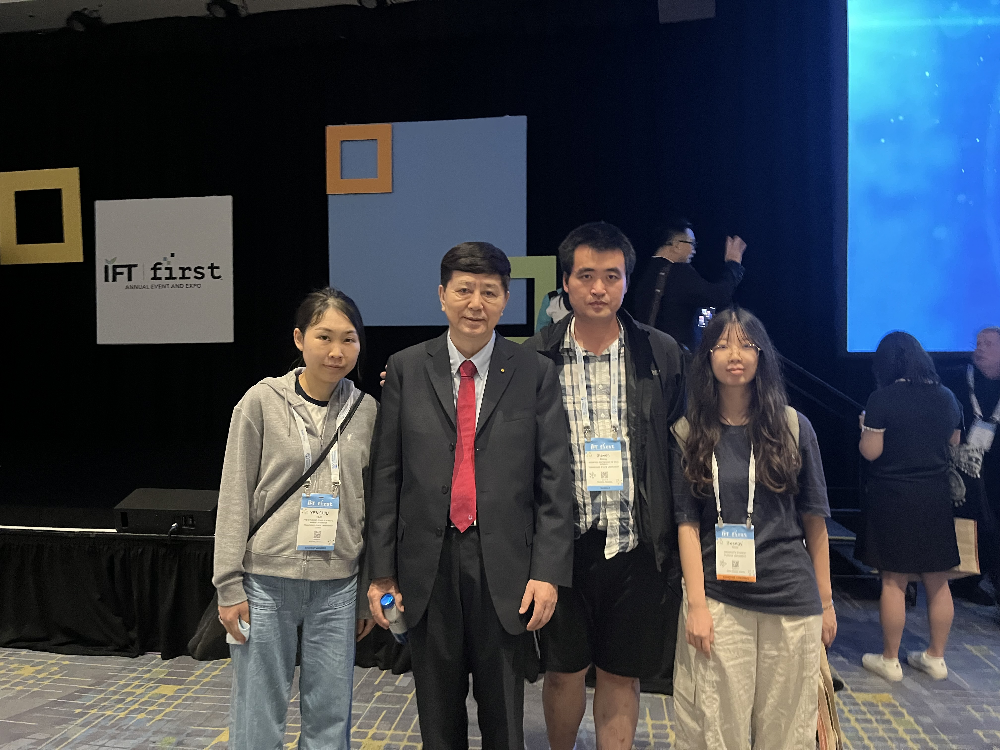
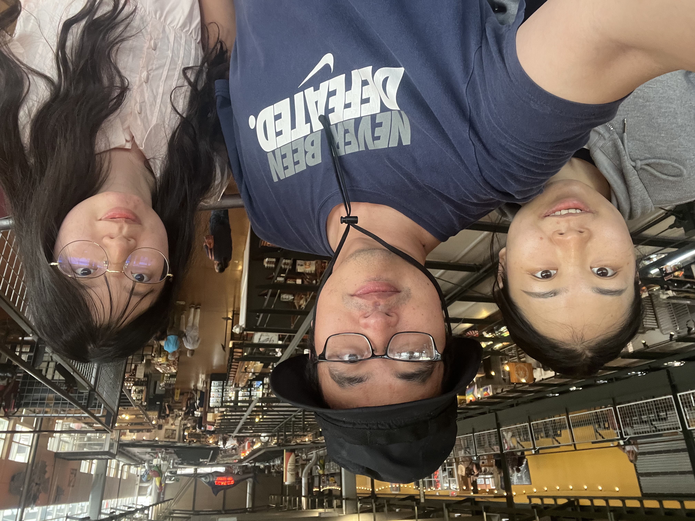

About us
The TSU Meat Science Laboratory operates at the intersection of agricultural innovation, analytical chemistry, and biomedical science. We apply high-resolution spatial nutrition analysis and metabolomics to address critical questions in food quality, safety, and human health—including novel frontiers in diet related cancer research.
By leveraging strategic collaborations across institutions, we apply cutting-edge chemical and biological instrumentation to meat science research.
Strategic Research Pillars
- Variety & Organ Meat Valorization: Optimizing collection, processing, nutritional integrity, and utilization of offal products.
- Spatial Chemistry & Lipidomics: Mapping molecular distributions in muscle tissue using MALDI–MSI and LC–MS/MS.
- Biomedical & Cancer Research: Translating mass spectrometry imaging methods to examine cellular metabolism and health outcomes.
- Quality & Consumer Innovation: Connecting high-dimensional analytical data with sensory evaluation and food safety.
Lab Photos
Tennessee State Fair 2026, Lebanon, TN

RMC 2026 Lebanon, Amarillo, TX

IFT 2026, Chicago, IL

UW-Madison Visit, Milwaukee, WI
